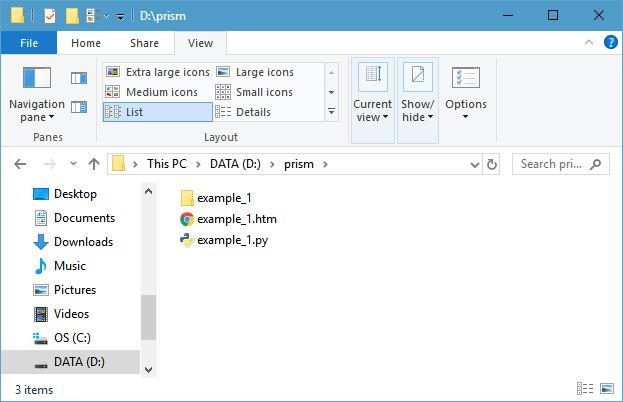
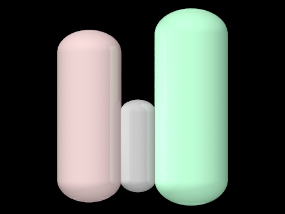
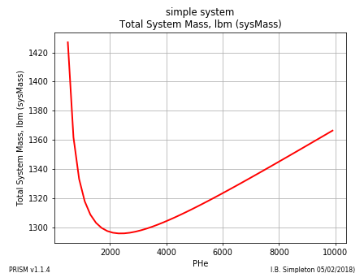
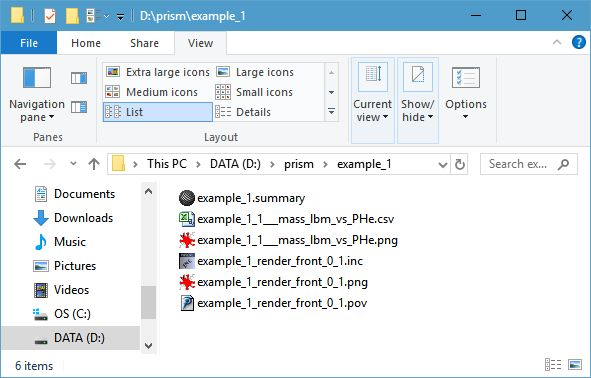

QuickStart¶
Install 32 bit Python 2.7¶
At the time of this writing, python 2.7.15 is the latest version of python 2.7. PRISM does not currently support python 3.x, so be sure to use a 32 bit 2.7 environment.
There are many FORTRAN routines in PRISM that are compiled for use with 32 bit python 2.7. Those PRISM routines will not work with the 64 bit version of python 2.7 unless they are recompiled.
The Windows installer is python-2.7.15.msi, so run it after downloading from www.python.org.
Note
Make sure that your PATH environment variable reflects the above install.
It should contain "C:\Python27" and "C:\Python27\Scripts"
After the install, open a new Command Prompt window and simply type, PATH, to see what your PATH environment variable contains.
Install Python Packages¶
There are a number of support packages that PRISM requires to run properly. Python uses the pip installer to get these packages directly from the PyPi repository. The following commands will install the required packages:
pip install future
pip install numpy
pip install matplotlib
pip install scipy
pip install pywin32
pip install configparser
Note
There are several All-In-One scientific python distributions that have the above packages pre-installed. You may prefer these to installing individual packages.
Python(x,y) - the scientific Python distribution
Anaconda (Python distribution) (note that Anaconda does not store its python files at C:\Python27)
WinPython - Python-based scientific environment (note that WinPython only has 3.x versions of python, so PRISM would need an update to work with WinPython)
Install PRISM¶
The easiest way to install PRISM is to run the EXE install program. PRISM version 1.1.12, for example, would be:
prism-1.1.12.win32.exe
This can be done by double clicking the file in File Explorer or giving the above command in a Command Prompt Window.
For help with the command prompt, see: https://www.wikihow.com/Open-the-Command-Prompt-in-Windows.
Install Support Software¶
PRISM makes use of several support codes. Two commercial programs (Refprop and TDK) as well as one open source program (POV-Ray).
Refprop can be obtained from www.nist.gov/srd/refprop
POV-Ray can be downloaded from http://povray.org/, however, an EXE install file should have come with the rest of the PRISM files:
povwin-3.7-agpl3-setup.exe
Contact your software administrator to obtain a copy of TDK.
Note
TDK is restricted by U.S. export control regulations
When you run PRISM the first time, you will see the reminder text below that gives information about the required installs.:
for full functionality,
Refprop, TDK and POV-Ray must be installed
Refprop is a Commercial Program
Buy Refprop at: www.nist.gov/srd/refprop
TDK is a Commercial Program
Get TDK from your software administrator
NOTE: TDK is restricted by U.S. export control regulations
POV-Ray is an open source ray-tracing program
for installation instructions see: http://povray.org/
type "prism_setup" in a "Command Prompt" window
to help PRISM locate the above codes on your computer
CURRENT LOCATIONS:
TDK: unknown
RefProp: unknown
POV-Ray: unknown
Note
type prism_setup at the command prompt to set up the locations for Refprop, TDK and POV-Ray
Getting Help¶
After installing PRISM, there will be a launch command line program called prism and/or, prism.exe.
From a terminal or command prompt window simply type:
prism
Your browser will launch with these PRISM help pages.
Running PRISM¶
There are a large number of examples included in this document from the more simple Building Blocks examples to more complex System Models.
For instance, look at Example_1 on the Many Examples page.
Click on the Source File:example_1.py link to view the source code for that example.
Highlight the source code with your mouse, right click the highlighted code and select Copy.
Paste that code into your text editor and save it to a python file.(for example D:/prism/example_1.py).
At a command prompt, navigate to that subdirectory (D:/prism in the example above) and give the command:
python.exe example1.py
You should see POV-Ray launch and create an image with 3 tanks and output to the command prompt something like the following.:
D:\prism>python.exe example_1.py
Config File: C:\Users\Charlie\PRISM.cfg
Refprop dll_path = C:/RefProp8/
adding fluid Helium.fld
scriptName: example_1.py
scriptPath: D:\prism\example_1.py
newDirPath: D:\prism\example_1\
POVFileName: D:\prism\EXAMPL~1\example_1.pov
HTML file: D:\prism\example_1.htm
-------------------------------------------------------
1298.812 simple system lbm
======================================
==========SYSTEM MASS SUMMARY=========
======================================
PRISM System: simple system
mass = 1298.812 lbm
type = trial baloon
INERT
393.856 lbm Fuel Tank
335.842 lbm Helium Tank
551.250 lbm Oxidizer Tank
PRESSURANT
17.863 lbm Helium Pressurant
======================================
======================================
Defined pvengine.exe at: C:/Program Files/POV-Ray/v3.7/bin
POVRAY_EXE = C:/Program Files/POV-Ray/v3.7/bin\pvengine64.exe
_______________________________________________________
rendering POV file: example_1_render_front_0_1.pov
building 2D plot example_1_1___sysMass_vs_PHe.png
image saved as D:\prism\example_1\example_1_1___sysMass_vs_PHe.png
with dpi = 70
saving data to CSV file example_1_1___sysMass_vs_PHe.csv
Closing all open files
------------------------------------------------------------
(PRISM) PaRametrIc System Model
PRISM v1.1.4
contact: C. Taylor, cet@appliedpython.com
------------------------------------------------------------
D:\prism>
Running example_1.py will create an output file called example1.htm and a subdirectory called example_1
Double clicking the example_1.htm file will launch your browser and display the analysis results. The images below are taken from that HTML page.
 {kind=link}
{kind=link}
The subdirectory example_1, contains a number of images and data files created by the analysis. The above two images as well as the data used to create the plot in a CSV file (Excel can open it). Also included are the files used by POV-Ray to create the scaled 3D rendering of the tanks.
The purpose of the POV-Ray renderings is to show scale and general layout, not detailed component drawings.
PRISM Error Messages¶
numpy upgrade¶
A possible error message that PRISM may issue is in regards to the version of numpy included in your python installation. An error message something like:
module compiled against API version 0xc but this version of numpy is 0x9
means that your version of numpy needs to be upgraded.
At a command prompt, give the following command to upgrade your version of numpy:
pip install numpy --upgrade